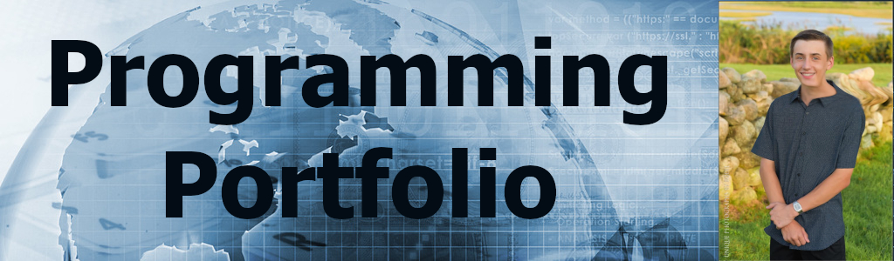

Final Project
This page has my final programming project for CSC 106. The program was made using Khan Academy, and is written in JavaScript using the ProcesssingJS Library. The game is based on the Atari game "Breakout," and operates similar to that game. It starts with a grip of bricks and a paddle, as well as a ball. The player has to keep the ball from going off the bottom of the screen in order to break all the bricks, at which point they win the game.